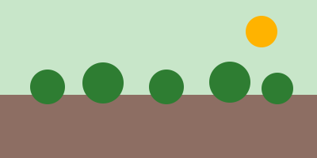

Chuva forte atrasa a colheita de soja no Sul

Publicado em
As chuvas das últimas 72 horas deixaram as máquinas paradas em parte do Sul do país e a previsão indica mais dois dias de instabilidade.
Transportadoras já reorganizam rotas de coleta para evitar estradas de terra alagadas.